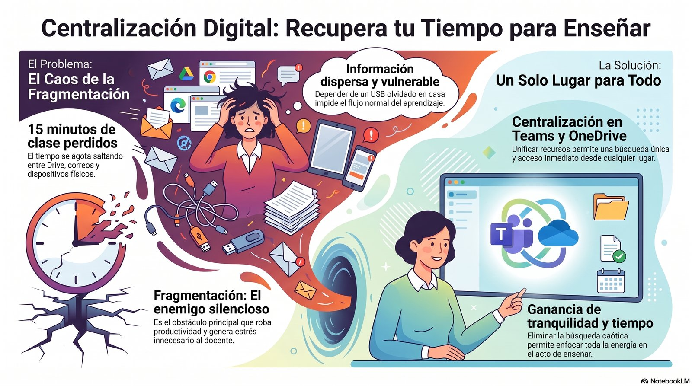
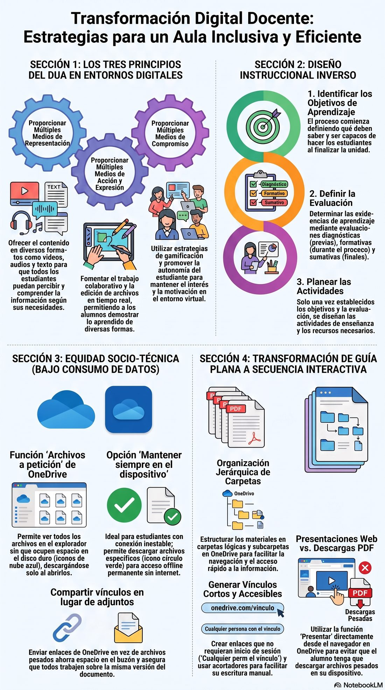
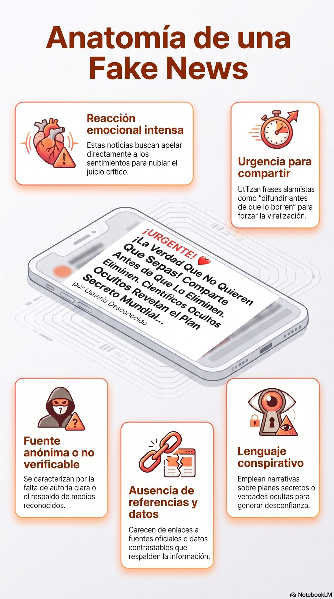
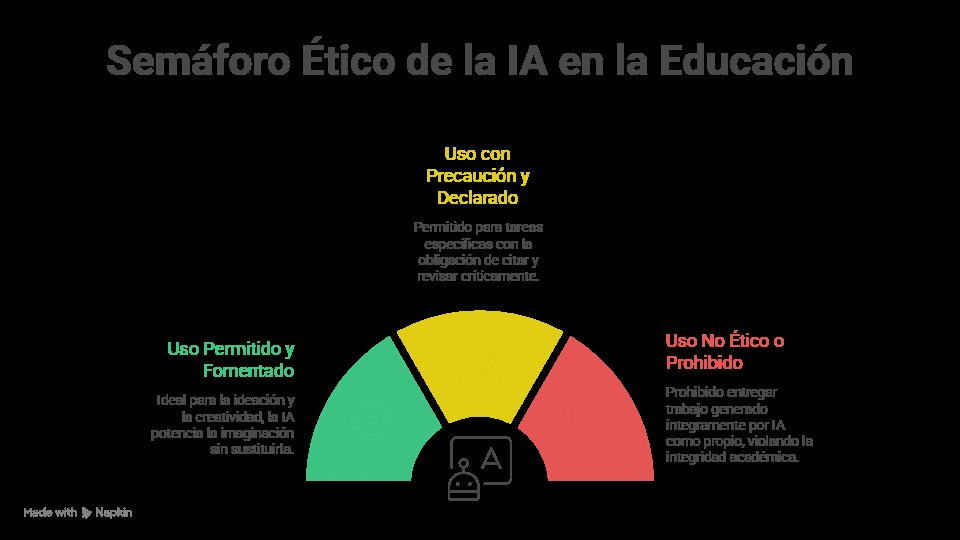

Ecosistemas Educativos Conectados: Currículo, Transmedia y Mediación Crítica de la IA
Curso completo para docentes y directivos, diseñado para transitar de un ecosistema digital fragmentado hacia una arquitectura unificada, inclusiva, transmedia y éticamente gobernada frente a la inteligencia artificial generativa.
Mapa general del curso
Arquitecturas Distribuidas y Unificación del Ecosistema Digital
Semana 1 · 10 horas — MS Teams y OneDrive como arquitectura unificada.
02Actividades Auténticas e Inclusión Digital por Diseño (DUA)
Semana 2 · 10 horas — Diseño inverso y equidad socio-técnica.
03Narrativas Transmedia y Literacidad Crítica en el Aula
Semana 3 · 10 horas — De prosumidores a creadores críticos.
04Inteligencia Artificial en la Escuela: Ética y Políticas Públicas
Semana 4 · 10 horas — Gobernanza participativa de la IA.
Puntos e insignias
Gana puntos completando las actividades gamificadas de cada unidad y la autoevaluación final. Tu progreso se guarda en este navegador.
Arquitecturas Distribuidas y Unificación del Ecosistema Digital
Este objeto de aprendizaje introduce al docente en el diagnóstico y rediseño del ecosistema digital institucional, transitando de un modelo fragmentado de plataformas hacia una arquitectura distribuida y centralizada sobre Microsoft 365.
Objetivos específicos
- Diferenciar el modelo de "aula expandida" del modelo de "aula insular".
- Configurar un canal estructurado en Microsoft Teams como espacio único de mediación.
- Sincronizar carpetas maestras en OneDrive corporativo.
- Elaborar una cartografía digital del Entorno Personal de Aprendizaje (PLE).
Temas y subtemas
Contraste conceptual entre entornos que dialogan con la totalidad de la vida escolar y entornos cerrados que aíslan la experiencia de aprendizaje.
Lectura crítica del caso Colegio Castilla IED: blogs personales, Classroom atomizado, videoconferencia subutilizada.
Criterios de jerarquización, nomenclatura y accesibilidad para configurar un AVA institucional coherente.
Uso pedagógico —no solo administrativo— de Teams y OneDrive: canales, pestañas, permisos y carpetas maestras.
Herramienta de autodiagnóstico visual para mapear plataformas y decidir cuáles migrar, fusionar o eliminar.
Infografía: Centralización Digital — Recupera tu Tiempo para Enseñar

Haz clic en la imagen para verla en tamaño completo.
Elementos transmedia
Arquitecto de canales Teams-OneDrive: plantilla editable para simular la estructura de canales, pestañas y carpetas maestras.
Descargar plantilla🎮 Actividad gamificada: Cazadores de plataformas fantasma
Clasifica cada herramienta institucional como usada pedagógicamente o como infraestructura "fantasma" (pagada y subutilizada).
Ideas principales
- La dispersión de plataformas incrementa la carga cognitiva de estudiantes, docentes y familias.
- Centralizar el ecosistema es una estrategia pedagógica de reducción de fricción cognitiva.
- Teams y OneDrive ya están pagados y subutilizados: la transformación es de uso, no de inversión.
Actividades Auténticas e Inclusión Digital por Diseño (DUA)
Traslada la arquitectura unificada de la Unidad 1 al diseño instruccional, integrando el Diseño Universal para el Aprendizaje (DUA) y el diseño inverso (Backward Design) frente a la conectividad inestable del territorio.
Objetivos específicos
- Reconocer los tres principios del DUA aplicados a entornos digitales.
- Aplicar el diseño instruccional inverso (Backward Design).
- Diseñar actividades de bajo consumo de datos para equidad socio-técnica.
- Transformar una guía plana en una secuencia didáctica interactiva.
Temas y subtemas
Representación múltiple, acción/expresión y motivación, según las pautas CAST (2018).
Planeación que parte de la evidencia de desempeño esperada para retroceder hacia actividades y contenidos.
Estrategias de descarga previa, formatos livianos y actividades asincrónicas para conectividad móvil intermitente.
Mecanismos de apoyo progresivo: pistas, ejemplos resueltos, glosarios emergentes.
Análisis de un estudiante con datos móviles prepago disponibles solo en horario nocturno.
Infografía: Transformación Digital Docente — Estrategias para un Aula Inclusiva y Eficiente

Haz clic en la imagen para verla en tamaño completo.
Elementos transmedia
"Un día con datos limitados": escenario ramificado donde decides qué formato consumir según la conectividad disponible.
Descargar checklist DUA🎮 Actividad gamificada: El semáforo DUA
Clasifica cada actividad según su nivel de flexibilidad de acceso: verde (flexible), amarillo (parcial) o rojo (rígida).
Ideas principales
- El DUA beneficia a la totalidad del estudiantado, no solo a "casos especiales".
- El diseño inverso define primero la evidencia auténtica antes que los recursos.
- La equidad socio-técnica exige diseñar para el peor escenario de conectividad.
Narrativas Transmedia y Literacidad Crítica en el Aula
Aborda la paradoja de la hiperconexión informal a redes sociales frente al analfabetismo en competencias digitales académicas, capitalizando pedagógicamente ese consumo.
Objetivos específicos
- Diferenciar consumidor pasivo de prosumidor crítico.
- Aplicar el modelo de alfabetización crítica de Selwyn.
- Diseñar un desafío transmedia hacia formatos de consumo estudiantil habitual.
- Curar Recursos Educativos Abiertos (REA) frente a la desinformación algorítmica.
Temas y subtemas
Distinción entre uso instrumental y uso crítico de la tecnología educativa.
El aprendizaje ocurre más allá del LMS: comunidades, plataformas y redes informales.
Aportes de Jenkins (2006) sobre circulación de contenidos y participación activa de audiencias.
Criterios de selección, licenciamiento abierto y verificación de fuentes.
Estrategias para identificar desinformación amplificada por algoritmos de recomendación.
Infografía: Anatomía de una Fake News

Haz clic en la imagen para verla en tamaño completo.
Elementos transmedia
Guion para hilo explicativo académico: convierte un tema curricular en un hilo breve con rigor argumentativo.
Descargar plantilla🎮 Actividad gamificada: Verificador de hilos
Recibe fragmentos de hilos de redes sociales y decide si son confiables o si presentan señales de desinformación.
Ideas principales
- La hiperconexión informal no equivale a competencia digital académica.
- El prosumidor puede volverse creador crítico con estructuras de verificación.
- La curaduría de REA es una competencia transferible a la vida ciudadana digital.
Inteligencia Artificial en la Escuela: Ética y Políticas Públicas
Cierra el MOOC abordando la parálisis organizativa frente a la IA generativa, proponiendo la co-construcción de un marco ético-normativo institucional inspirado en los lineamientos de la UNESCO.
Objetivos específicos
- Analizar oportunidades y riesgos de la IA generativa en el aula.
- Aplicar principios básicos de ingeniería de prompts educativos.
- Reconocer los lineamientos de gobernanza de la IA de la UNESCO (2023).
- Co-construir una normativa institucional de uso ético de la IA.
Temas y subtemas
Usos pedagógicos legítimos frente a riesgos de dependencia cognitiva y homogeneización.
Principios para formular instrucciones claras, contextualizadas y verificables.
Lineamientos internacionales sobre uso responsable de la IA en educación.
Identificación de sesgos y estrategias de evaluación procesual.
Consideraciones éticas y legales sobre datos de estudiantes menores de edad.
Proceso participativo para redactar lineamientos propios de uso de la IA.
Infografía: Semáforo Ético de la IA en la Educación

Haz clic en la imagen para verla en tamaño completo.
Elementos transmedia
Cómo programar agentes inteligentes libres: ejemplos de prompts educativos y buenas prácticas.
Descargar micro-guía🎮 Actividad gamificada: Detective de sesgos
Analiza respuestas reales de IA generativa e identifica el tipo de sesgo presente.
Ideas principales
- La IA generativa no reemplaza el juicio pedagógico docente.
- Una ingeniería de prompts clara reduce sesgos y mejora la pertinencia educativa.
- Evaluar el proceso —no solo el producto— mitiga el plagio mecánico.
Autoevaluación (10 preguntas)
Selecciona una respuesta por pregunta. Al calificar recibirás retroalimentación inmediata y un puntaje final, tal como se implementaría en Moodle mediante un cuestionario H5P/Quiz.
Rúbrica de evaluación
La evaluación considera cinco criterios de igual peso (1.6 pts c/u) para un total de 8 puntos por actividad, escalable a 100 puntos según los lineamientos institucionales.
| Criterio | Excelente (1.6) | Satisfactorio (1.2) | En desarrollo (0.8) | Insuficiente (0.4) |
|---|---|---|---|---|
| 1. Diagnóstico del ecosistema digital educativo | Diagnóstico riguroso con datos empíricos; identifica brechas y necesidades; contextualiza el diseño del MOOC. | Diagnóstico adecuado con algunos datos; identifica necesidades sin profundidad contextual. | Diagnóstico básico; descripción general sin datos ni vinculación con el diseño. | Diagnóstico ausente o no relacionado con el diseño del MOOC. |
| 2. Fundamentación teórica (Unidad 2) | Integra sólidamente ≥4 referentes teóricos articulados con el diseño. | Cita 2-3 referentes con relación parcial al diseño. | Menciona 1-2 referentes de forma superficial, sin articulación clara. | No incorpora referentes teóricos o los cita sin relación. |
| 3. Diseño instruccional del MOOC | Define objetivos SMART, estructura modular coherente, actividades activas variadas, evaluaciones formativas y sumativas alineadas (Biggs, 2003). | Objetivos claros, estructura modular básica; actividades y evaluaciones presentes pero con baja diversidad. | Objetivos genéricos, estructura parcial; actividades poco diversas, evaluación limitada. | Sin objetivos claros, estructura desarticulada o evaluación ausente. |
| 4. Recursos y estrategias digitales | Incorpora recursos multimodales (video, microlearning, transmedia, foros, quizzes) con justificación pedagógica explícita. | Incluye recursos digitales variados con justificación parcial. | Recursos básicos (texto/PDF); poca variedad, justificación insuficiente. | Recursos digitales ausentes o inadecuados para la modalidad MOOC. |
| 5. Calidad académica y presentación | Redacción precisa y coherente en APA 7.ª ed.; presentación profesional; reflexión crítica sobre equidad y contexto latinoamericano. | Buena redacción y citación APA con errores menores; presentación adecuada; reflexión parcial. | Redacción regular, citación incompleta; presentación mejorable; reflexión crítica escasa. | Errores graves de redacción, sin citación APA o presentación deficiente. |
| Puntaje total: 8.0 pts (escalable a 100 pts institucionales) | ||||
Agente virtual del curso
Pregúntale a Aika sobre las unidades, la rúbrica, la autoevaluación o las actividades gamificadas. Responde por texto y en voz alta usando la síntesis de voz del navegador. Funciona mejor en Chrome o Edge (escritorio o Android).
Aika
Agente virtual del OVA — responde por voz y texto
El reconocimiento de voz requiere permiso del micrófono y conexión a internet en el navegador del visitante.
Recursos y plantillas descargables
🗂️ Arquitecto de canales Teams-OneDrive
Plantilla editable para simular la estructura de canales, pestañas y carpetas maestras (Unidad 1).
Descargar✅ Checklist DUA
Lista de verificación de 8 ítems para auditar la flexibilidad de una guía de aprendizaje (Unidad 2).
Descargar📝 Guion para hilo explicativo académico
Plantilla para transformar un tema curricular en un hilo breve con rigor argumentativo (Unidad 3).
Descargar📄 Micro-guía de prompts educativos
Ejemplos de prompts bien formulados y clasificación semáforo de usos de IA (Unidad 4).
Descargar